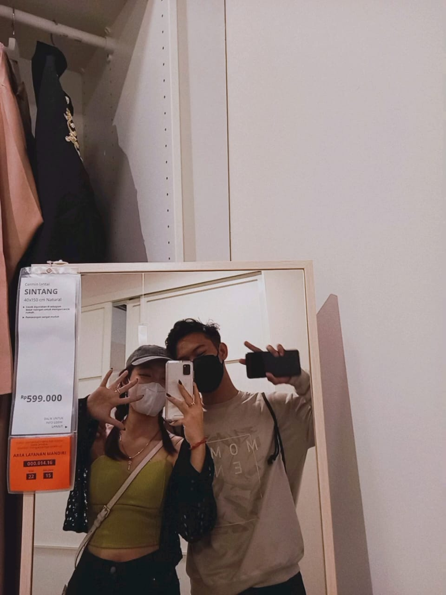

Pertama kaliii mas makan es krim enak dan apaa sayang? sehatt? WKWKWKWKW
mam es krim enak juga ya sayang ya WKWKWKWKW semenjak mas sama km, mas jadi tau ada banyak macam es krim yang belum mas coba. mas kira cuma es krimnya yang enak, ternyata makan bareng sama km ngebuat makin better ternyata wkwkw
Kita keliling alsutt mencari kitab suci (bukan ya WKWKWKWK)
LUCUUU BGTTT ADA POTO INI WKWKWKW seruu bgtttt kita jalan-jalan sampe akhirnya km ketemu trus ngobrol sama temen mas pertama kali WKWKWKWK mas seneng bgt jalan-jalan bareng km, rasanya lebih fun padahal cuma berdua, tapi kalo berduanya sama km, km ajak mas kemana aja juga mas gas-gas aja ini sayang WKWKKWKW

ALAMAKK DI ALSUT LAGI WKWKWKKW
tapii ini asik jugaa pas kita ke ikea bareng kayaaa seruuu bgtttt WKWKWKWKW kangen kesini sama km hehe tapi beneran mas mau kesini lagi sama km, walopun km sengaja pake topi karna rambut km kena pas pake helm, tapi sbelum km brangkat, mas uda liat pap km foto ini rambut km bagus, km MAKINNN cantikkkk
entah kenapa jadi keinget begini masnya sama ini sayang alamak
ini mas gabisa ngomong banyak ya WKWKKWKWKW

ikutt natall km bareng temen-temen km
temen temen mas juga ikut sihh, walopun tiba-tiba mereka jadi berulah ingin mas slepet, cuma jangan deh sayang soalnya uda mau nemenin masnya WKWKWKW walopun banyak tantangan disini tapi mas seneng bisa dateng, bisa liat km jugaa, but mas sangat sangat sangat sayang sama km (uda dari dulu sih cuma mas stiap liat km bikin sg yang km nya seneng, mas uda ikut seneng)
NATALANN LAGIIII????
WAHHH KALOO INI SIHH DARI PERSIAPANN NATALANNYA SAMA PAS NATALANN SIH DEBESS YAA SERUU BGTTTT, MAS GABAKALAN BISA LUPA INI SIH ALAMAKK, mulai dari nyiapin di greja bareng km juga, abis itu nyiapin di gedungnya jugaa, abis ituu NATALANNYAA PALING SERU BGTT BGTTT BGTTTTT, ketemu temen km juga si jopin (versi alim (?)) WKWKWKKWW tapii semuanya seru sampe mas sangat bangga kalo km bisa sebagus inii tamborinnya, INGETT INI JADI KEINGET LAGI KALO KM KERENNN BGTTT (INI DISINI GIMANA YA NGASI EMOT NANGISNYA), rambut km lucuu, randomnya km lucuu, km lucuuuu, mas masi inget bgt feeling bareng sama km, bukan karna mas bucin ato apa (emang sayang sih sama km), tapi mas inget bgtt ajaa momen' bareng km nya
NATALANN LAGIIII????(1) WKWKKWWKKW
adaaa foto ini lagii WKWKWKKWKW tapi ndaa tau yaa lucu ajaa mas liat poto ini apalagii km makee kostum ini u look so pretty n cute
Judul Video Anda
Deskripsi video Anda di sini.
mas bikin ini uda kaya orang bener aja ya WKWKWKKWKW mas pun nda espek bikin ini buat km sayang. cuma smoga km suka